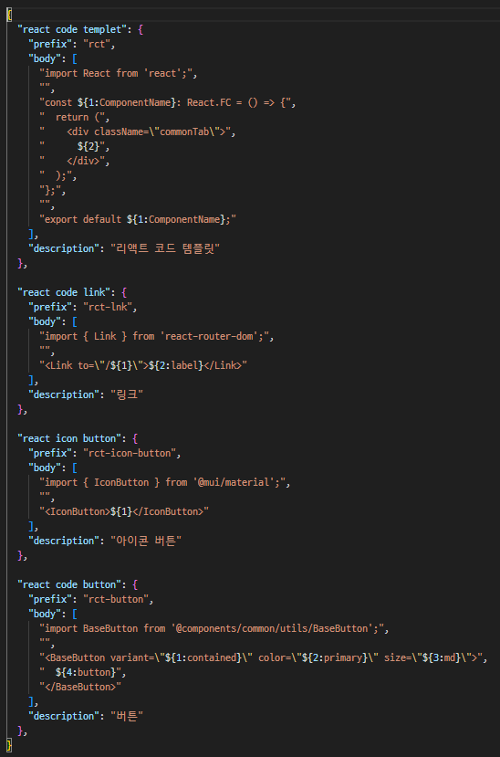

현재 제가 가장 많이 활용하는 VS Code 기능 중 하나는 '
Snippets'에
대해서 얘기하려고 합니다.
이 기능은 자주
사용하는 코드 조각들을 저장하고, 필요할 때 빠르게 불러올 수 있습니다. 예를 들어, HTML5 기본 구조, 자주 쓰는 CSS
스타일, 자바스크립트 함수 템플릿, vue, react 코드 템플릿 등을 미리 정의해두고, 특정 키워드를 입력하면 자동으로 해당 코드가
삽입됩니다.
Snippets 기능을 활용하면 반복적인 코딩 작업을 줄일 수 있어 생산성이 크게 향상됩니다. 또한, 일관된 코드 스타일을
유지하는 데도 도움이 됩니다. 팀원들과 공유할 수도 있어 협업 시에도 유용합니다. Snippets 기능을 적극적으로 활용하면 코딩 속도가
훨씬 빨라지고, 더 효율적으로 작업할 수 있습니다. 아직 사용해보지 않았다면, 지금 바로 설정해보시길 추천합니다.
사용 방법에 대해서 위에 링크 영상을 참고해주세요.
개인적으로는 vue, react 컴포넌트, 템플릿을 작성할때 매번 기존 파일을 찾아서 복사-붙여넣기 하는 시간을 줄일 수 있어 매우
유용하게 사용하고 있습니다. 아래는 제가
현재 참여중인 프로젝트 코드 스니펫 일부를 공유합니다.
